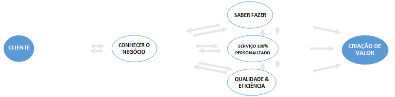

O comprometimento da CONNECT, com a entrega de resultados positivos nos permite trabalhar de maneira dinâmica e inovadora, sempre atentos à relação de parceria e confiança que cultivamos com os nossos clientes e parceiros. Promover a globalização de processos de Governança Corporativa, com mensuração constante da qualidade dos serviços técnico-operacionais e de Tecnologia da Informação. Apresentamos soluções inovadoras e de grande potencial de mercado e na gestão contínua de processos e negócios.
Outsourcing
O comprometimento da CONNECT, com a entrega de resultados positivos nos permite trabalhar de maneira dinâmica e inovadora, sempre atentos à relação de parceria e confiança que cultivamos com os nossos clientes e parceiros. Promover a globalização de processos de Governança Corporativa, com mensuração constante da qualidade dos serviços técnico-operacionais e de Tecnologia da Informação. Apresentamos soluções inovadoras e de grande potencial de mercado e na gestão contínua de processos e negócios.
Somos um parceiro especializado em terceirização de serviços de TI, com grande alcance de toda a TI através de solução inovadora, proporcionando valor agregado em cada uma de nossas soluções propostas.
- Somos especialistas na prestação de serviços de Outsourcing de TI, mais de 15 anos de experiência onde uma grande quantidade de clientes nos avaliam.
- Evoluímos continuamente os nossos serviços, para se adaptar a cada momento às inovações tecnológicas e operacionais necessárias pelos nossos clientes.
- Nossa oferta se caracteriza por possuir uma orientação clara ao cliente, devido ao amplo conhecimento do seu negócio.
- A Connect está dentro do processo de evolução que Outsourcing de TI está vivendo na atualidade. Temos incorporado em nossas ofertas um modelo de entrega “As a Service” para atender a realidade do mercado.
- Nossas equipes, com uma grande variedade de conhecimento e experiência, permitem integração contínua e dedicada às necessidades do cliente, com o menor impacto possível na realização de suas atividades.
- Toda nossa estrutura de Outsourcing é executada conforme aderência às melhores práticas de ITIL e de serviços de TI, além do envolvimento constante e próximo com a área de Gestão de Infraestrutura de TI.
- Unidades de produção e equipes de gestão especializadas por mercado, possuindo um amplo conhecimento do seu setor. Levando as melhores práticas de cada setor a nossos serviços.
- Um modelo diferenciado, orientado à procura da localização e melhor configuração do grupo da prestação de serviço.

Desenvolvimento em plataforma alta e baixa
Soluções sob medida para os seus negócios. Nós te auxiliamos em qualquer serviço relacionado a tecnologia da informação. Deixe essas soluções com nosso corpo técnico.
Principais Atividades:
- Consultoria para a elaboração de Anteprojetos na área de informática,
- Análise e desenvolvimento e manutenção de sistemas,
- Migração de sistemas para plataformas multiusuários,
- Implantação e Manutenção de Gerenciadores de Banco de Dados e,
- Locação de Mão-de-Obra na área de Informática
Service Desk
A Connect fornece serviços de Service Desk por meio de ferramentas de Gestão de TI bem estruturadas, com base de conhecimento e software de controle remoto baseados nas melhores práticas do Information Technology Infrastructure Library (ITIL), para solucionar atendimentos de 1°, 2° e 3° níveis. O atendimento é realizado com base em Acordos de Nível de Serviço (SLA) estabelecidos pelo cliente, que determinam o tempo em que a prestação dos serviços deve ser cumprida. O objetivo é resolver os incidentes e problemas que surgem no dia-a-dia com qualidade e celeridade.
Gestão e automatização de processos
Com pouco investimento, sem impacto na sua infra-estrutura ou sistemas legados e em poucos dias você já pode colher os frutos da gestão e automação de processos de negócios, para isto basta identificar o processo. Para automatizar um processo iremos mapear e desenhar o processo da forma como ele é executado atualmente, mostrando com eficiência seus benefícios:
- Aumento da produtividade;
- Agilidade no atendimento às novas necessidades dos clientes;
- Aperfeiçoamento dos processos e controles existentes buscando eficiência;
- Redução de custos;
- Aumento do nível de segurança no tratamento das informações;
- Garantia de conformidade e transparência com normas e leis.
Tercerização de profissionais de TI
Um profissional especializado é destacado pela Connect para atuar e se relacionar dentro da sua empresa, respondendo e tratando internamente por todas as demandas existentes em tempo integral. A terceirização é uma vantagem competitiva para a contratante, otimizando tempo, custos, manutenção e soluções.Foco no core-businessA incorporação de terceiros para o suporte propicia melhores resultados e mais disponibilidade do pessoal interno para atuar no negócio legítimo da empresa. Relatórios de SLA detalham as garantias de qualidade, quantidade, modalidade e precisão do que está sendo trabalhado.
Infraestrutura de TI
Os serviços de suporte à infraestrutura de Tecnologia da Informação garantem o atendimento a projetos estratégicos, suprindo as necessidades de suporte técnico aos usuários, além de melhorar e administrar a infraestrutura de TI, para proporcionar a estabilidade e a disponibilidade do ambiente organizacional.
Desenvolvemos um leque de soluções com foco na entrega de produtos e serviços, utilizando métodos diferenciados para a garantia de disponibilidade e capacidade, sempre entregando relatórios de desempenho, utilizando ferramentas dinâmicas e automatizadas.
Com foco voltado para o negócio do cliente, priorizamos a sua infraestrutura (hardware, serviços, processos e demais recursos) para obter o melhor desempenho.
Nossa expertise é confirmada por meio de parcerias com os principais fornecedores de tecnologia como:
Oferecemos serviços em manutenção on-site de equipamentos de tecnologia.